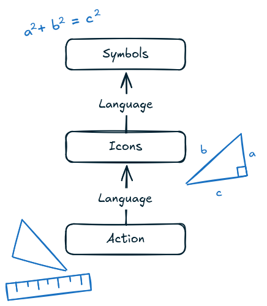

The EIS-schema describes a process of learning with regard to multiple layers or modes of representation of information/ ideas. It is especially well suited for teaching mathematics, as it is concerned with abstraction; students will usually start with a very concrete, physical task (an action to perform, an item to examine and interact with), and then abstract further and further away from it, such that they can then reason about the object and ones like it in purely representational form.
Enactive (actively interacting)
Iconic (representations with simillarity, such as drawings)
Symbolic (representations that are not simillar to the thing they represent at all, such as algebraic notation)
It is the teacher's task to guide their students through the different layers of abstraction, mediating between them via language and explanation.

When writing out a formula, instead of just saying "a² + b² = c²", you might say "the square of side a, plus the square of side b are equal to the square of the hypothenuse."
That the thing you are writing down and the thing you are saying mean the same and are not just arbitrary or random is not inherently clear to a student, but bridging the way with language can help, and referencing real-world objects makes it clear that the insights you are sharing are not just "true because I say so", but are actually of substance.